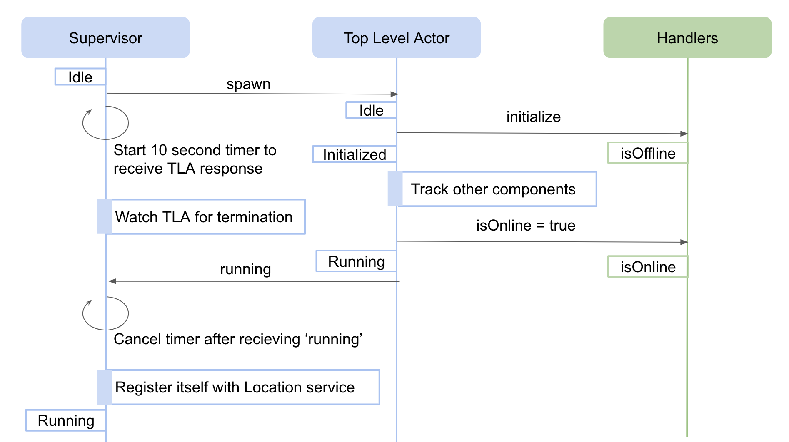
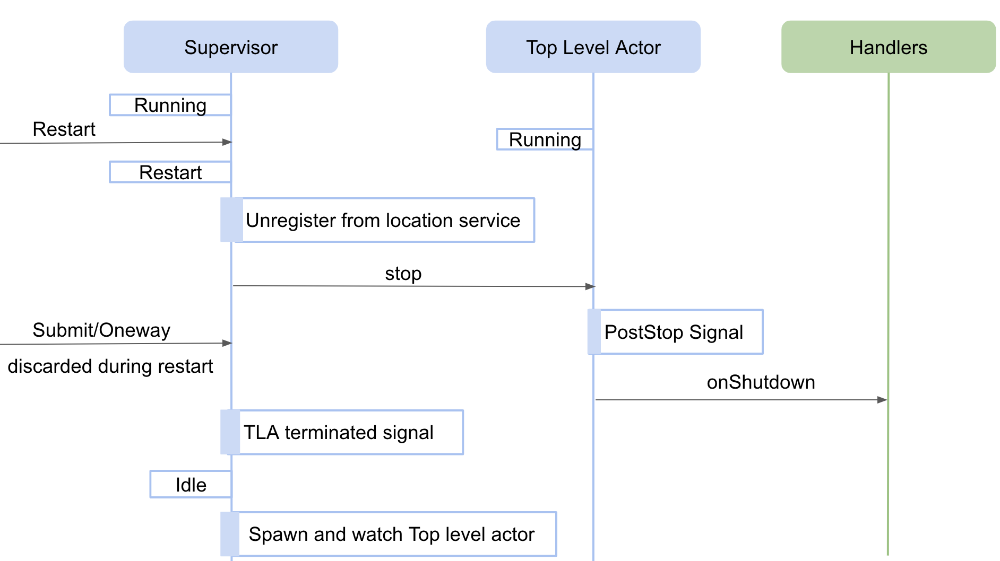
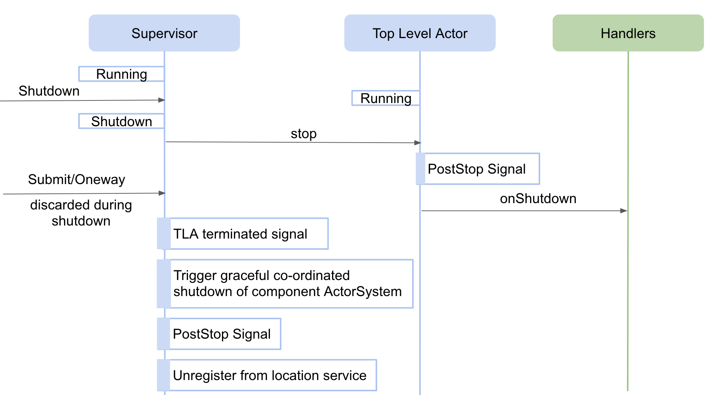
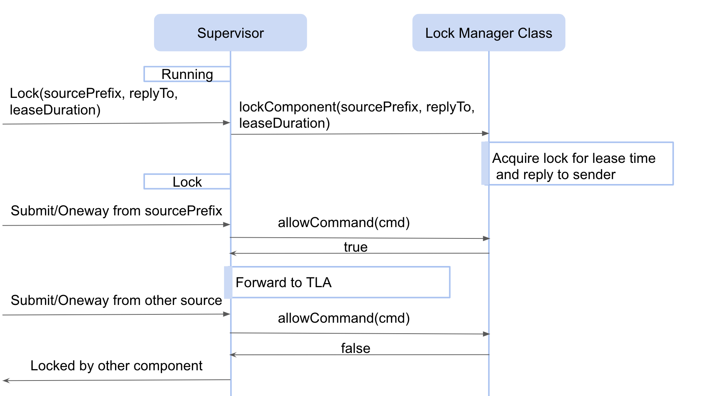

Framework
Introduction
The common software framework is a library that provides set of APIs used for:
- creation of components(Assemblies, HCDs)
- discovering other components
- receiving messages from external world
- sending messages/commands to other components
- receiving responses from components
- deploying component in container or standalone mode
The CSW framework is implemented using Akka typed actors.
Actors provide a single control of execution by processing messages received one by one. If a future is spawned inside an actor then on completion of that future, it is a common mistake to mutate actor state. It causes critical problems of state corruption because some other message might be in process of execution and accessing the state. The ideal way to handle futures inside actors is by sending message to self on future completion. This will make sure the mutation of state happens in order of one by one via messages. The example code can be seen here.
Creation of component
A component consists of couple of actors and classes created by framework on behalf of the component and some actors/classes that are expected to be created by component writers using the csw framework.
Framework actors/classes
The csw framework creates a Supervisor actor as the first thing while creating any component. The Supervisor goes on to create Top Level Actor, Pub-Sub Manager actor and Command Response Manager actor as part of TMT framework.
- The actors shown in blue are created by framework and actors/classes shown in green is expected to be written by component developer.
- The
Handlersshown above is implemented by extending ComponentHandlers/ JComponentHandlers framework class. So, the TLA decides when to call a specific handler method orhooksand implementation ofComponentHandlers/JComponentHandlersdecides what to do when it is called, for e.g. TLA decides when to call intialize handler and handler provides implementation of how to initialize a component, may be by putting the hardware in default position, etc.
To know more about the responsibility of Supervisor and Top level actor please refer this section.
The interaction between supervisor and top level actor for creating component is shown below:

The code base for creation of Top level actor and watching it, from Supervisor can be found here and code base for calling intialize handler from top level actor can be found here. The explanation about Idle state can be found here.
If there is any exception thrown while executing initialize handler then the exception is bubbled up till Supervisor and it restarts Top level actor which in turn calls initialize handler again hoping the error fixes on restart. For this, Supervisor uses restart strategy with maximum of 3 restarts possible and to be done within 5 seconds. To know more about akka supervision failure strategy please refer Akka Fault Tolerance document. The Supervisor code base wiring restart strategy can be found here.
Once the handler is spawned it receives ActorContext and CswContext in it’s constructor. The ActorContext is used to get the ActorSystem of the component and maybe spawn other actors i.e worker actors for maintaining state. The CswContext can be used to get the handle of all the services provided by CSW. To know more about these services please refer this section.
Configuration file for component startup
Every component needs to provide a startup config file that contains the details like name, type, handler class name, tracking details, etc. To know more about what is it and how to write the config file please refer this section and a sample file.
The name of the configuration file needs to be passed to Container/Standalone app at the time of startup. The config file is either fetched from Configuration Service or taken from local path on the machine to parse it to a ComponentInfo object. The ComponentInfo object is then passed to Handlers in CswContext.
ActorSystem for component
While creating a component, a new ActorSystem is spawned, which means if there are more than one components running in single jvm process there will be more than one ActorSystems created in single jvm. Having different ActorSystems in an application is not recommended by akka but it is still kept multiple per jvm so that any delay in executing a component does not affect execution of other components running in same jvm. The code base for creating an ActorSystem for each component is written in SupervisorInfoFactory.
Discovering other components
For discovering other components, there are two ways:
-
provide tracking information in configuration file as explained here. Whenever there is location update of tracked components onLocationTrackingEvent handler is called.
-
track using trackConnection handler.
Receiving messages from external world
Messages aimed for component is first received by Supervisor and it decides which messages to be passed to downstream actors( i.e. Top level actor, Command Response manager actor or Pub-Sub manager actor)
Restart
The code base for restart can be found here. The explanation about Restart state can be found here.

Shutdown
The code base for shutdown can be found here. The explanation about Shutdown state can be found here.

Changing log level
Messages to change log level (via SetComponentLogLevel) or get log metadata for a component (via GetComponentLogMetadata) gets handled by Supervisor. the code base for the same can be found here.
Lock
The code base for Lock can be found here. The explanation about Lock state can be found here.

Sending commands
The types of commands that can be sent and it’s creation can be found here. In order to send commands to other components, a CommandService helper is needed. CommandService helper is used to send commands to other components, in the form of method calling instead of sending messages to bare component supervisor actor. The creation of CommandService can be found here.
The operations allowed through CommandService helper are as follows:
Receiving responses from components
Submit
To know the flow of Submit please refer this section.

Oneway
To know the flow of Oneway please refer this section.

Validate
To know the flow about Validate please refer this section and the code base for the same can be referred here.
Command Response Manager
Once a Submit command is received by a component for e.g. an assembly receives submit command, then the assembly can choose to send one or more commands to HCD(s) as part of the submit command’s execution. Once, all the response(s) are received from downstream HCD(s), assembly need to complete the Submit as either Completed or Error. The CommandResponseManager provides different mechanisms to mark Submit command with final state.

The Assembly worker can communicate with CommandResponseManagerActor using CommandResponseManager coming via CswContext.
Current State Pub/Sub
For Oneway commands it’s responses are not sent back to sender as it is done for Submit. So, in order to track the status of oneway command CurrentState published by receiver component should be watched. The receiver component can use CurrentStatePublisher to publish it’s state from CswContext and the sender component can track state using subscribeCurrentState from CommandService.
Deploying component in container or standalone mode
Component(s) can start within a container or a single component can start as a standalone. The code base for Container and Standalone.
Since Akka Typed is used throughout the TMT framework, there are seperate messages understood by Container, Supervisor, Top level actor and other actors of framework. The architecture/relations of messages can be found here.